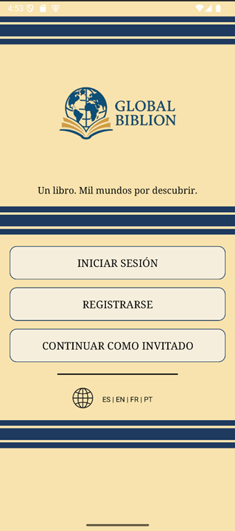
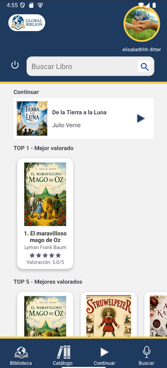
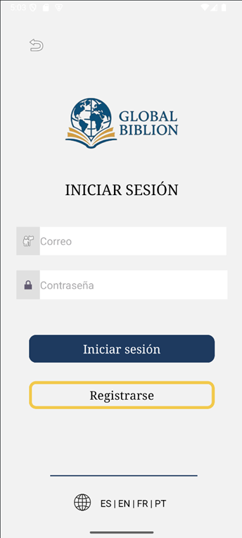
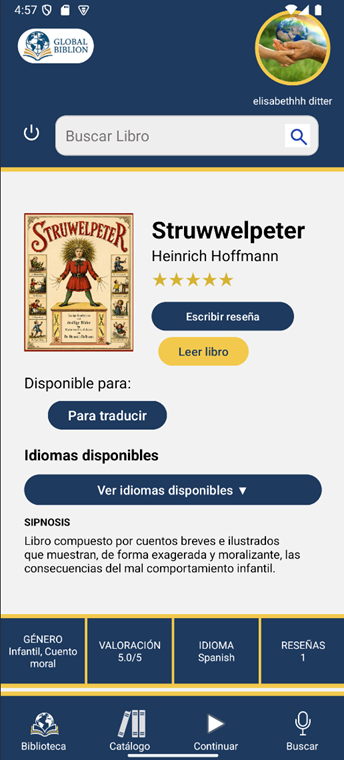
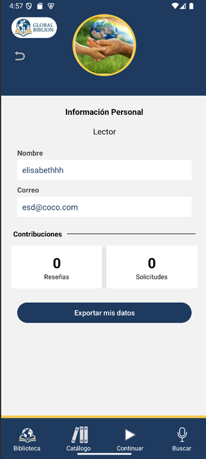
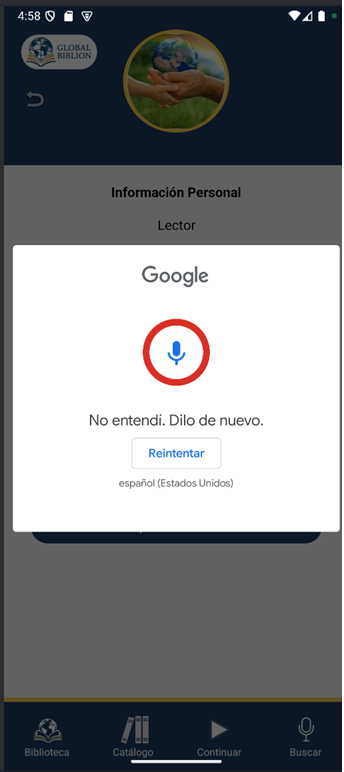

Técnica Superior en Desarrollo de Aplicaciones Multiplataforma, con especial interés en backend, automatización y tecnología con impacto social.
Explorar Global Biblion

Global Biblion nació como una idea personal y terminó convirtiéndose en mi Proyecto Final de DAM, desarrollado junto a una compañera de clase.
Es una plataforma que reúne libros de dominio público, audiolibros y una comunidad de voluntarios capaz de traducir obras o grabarlas para facilitar el acceso a la lectura.




Experiencia formando equipos y entendiendo necesidades reales.
Formación técnica en desarrollo de aplicaciones multiplataforma.
Interés en lógica de negocio, datos y automatización.
Global Biblion como proyecto vivo en evolución.